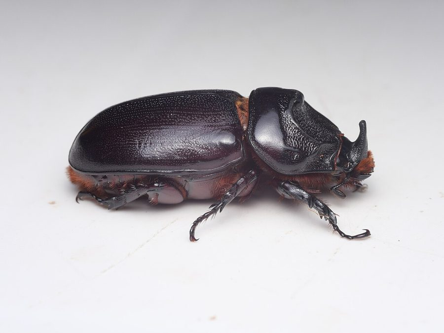

गैंडा भृंगAsian Rhinoceros Beetle
Oryctes rhinoceros · Scarabaeidae · INS-0061

- Scientific name
- Oryctes rhinoceros (Linnaeus, 1758)
- Family
- Scarabaeidae
- Hindi
- गैंडा भृंग
- Status here
- native
- IUCN
- not evaluated
- Review
- audited and independently read
When to look कब देखें
Expected mainly in April, May, June, July, August, September, October, November, December.
Uses and possibilities उपयोग और संभावनाएँ
Drawn from the documented uses in the profile below, where each is labelled traditional, current or a research lead. All uses →
गैंडा भृंग / Asian Rhinoceros Beetle
Oryctes rhinoceros (Linnaeus, 1758) — Scarabaeidae
गैंडा भृंग — एक बहुत बड़ा, काला, सींगों वाला बीटल जो मर जाते पेड़ों की लकड़ी में रहता है और सड़े हुए पदार्थ को खाता है। आम और नारियल के बागों में भूमिगत कोकोन में इसकी इल्ली सड़ी हुई लकड़ी को खाती है। वयस्क बीटल बेहद मजबूत होता है, नर के सिर पर एक बड़ी सींग होती है। कोकोन में रहते समय कई महीनों तक जीवित रहता है। कभी-कभी नरियल के पेड़ों में नुकसान पहुँचाता है, पर ज़्यादातर सड़ते पदार्थों का अपघटनकारी है।
Quick Identification त्वरित पहचान
| Feature | Description |
|---|---|
| Adult size | 35–50 mm long; very robust, stout beetle |
| Colour | Black or dark brown, shiny wing covers |
| Male's distinctive feature | Large, prominent horn-like projection on the head, curving upward and backward |
| Female appearance | No horn; head is smoother, smaller |
| Legs | Thick, powerful, adapted for burrowing |
| Larvae | Large, white, C-shaped grubs, 60–70 mm when mature |
| Larval habitat | Deep in the soil, inside rotting palm wood, coconut stumps, compost heaps |
Field tip: Look for large, shiny black beetles near coconut or date palm plantations, especially after monsoon rains. The males are unmistakable with their large head horn. The beetle is slow and clumsy on the ground, often found at dusk or night. Digging into rotting palm wood in the soil may reveal large white C-shaped grubs, which are the larvae.
हिंदी — कैसे पहचानें: सब से बड़ी, काली, चमकदार बीटल। नर के सिर पर बड़ी सींग, मादा नहीं। रात को निकलती है। गिरे हुए नारियल के पेड़ों की सड़ी लकड़ी में बड़ी सफेद इल्लियाँ।
Morphology आकारिकी
Biometrics:
| Measurement | Range |
|---|---|
| Adult body length | 35–50 mm |
| Adult body width | 18–25 mm |
| Male's horn length | 10–16 mm (from head apex) |
| Larval length (mature) | 60–75 mm |
| Larval weight | 8–12 grams |
| Pupal length | 45–50 mm |
Adult: One of the largest beetles of tropical Asia. Heavily armoured, with thick, barrel-shaped body. Colour is black or very dark brown, with a shiny, smooth or faintly granulated surface. The pronotum (front region) is large and bears a prominent median horn in males, which curves upward and backward; females lack this horn or have only a small tubercle. Antennae are clubbed, with seven leaves in the club. Legs are thick, powerful, with curved claws, adapted for burrowing. The elytra (wing covers) are smooth and meet along the midline.
Egg: Oval, creamy-white, laid in batches inside the wood of rotting palm trees.
Larval stage: Three instars. Larvae are large, stout, white or cream-coloured, strongly wrinkled, with a reddish-brown head. The body is C-shaped, with short legs. Larvae live in the soil, feeding on decaying plant material in cavities they create or inherit.
हिंदी: सब से बड़ी भारतीय बीटल। नर की सींग भयानक लगती है, पर शक्तिशाली जबड़े नहीं। इल्ली सफेद, C-आकार की, बहुत बड़ी।
Behaviour & Ecology व्यवहार और पारिस्थितिकी
A saprophagous (dung and decay-feeding) beetle that specializes in decomposing dead wood and other decaying organic matter. The larvae develop in rotting logs, compost heaps, and buried or decaying palm wood. The beetle is particularly common in coconut and date palm plantations where pruned wood and dead trees provide abundant larval habitat. Adults are nocturnal, emerging from the soil in the evening and feeding on leaves of palm trees and other plants, though they cause minimal damage. During the day, they burrow back into the soil or hide in crevices.
The male's impressive horn is used in intraspecific combat — males clash with their horns while competing for females or while tunnelling through wood. The horn is not a weapon for aggressive defence but rather an adaptation for navigating and establishing dominance in confined spaces within wood and soil.
The lifecycle is slow; development from egg to adult can take 9–12 months, depending on temperature and food quality. The beetle tolerates a wide range of soil moisture and temperature conditions.
हिंदी: गिरे हुए पेड़ों को खाता है, रात को निकलता है। सींग से नर आपस में लड़ते हैं, शिकारियों से नहीं। इल्ली कई महीने मिट्टी में रहती है।
Life Cycle / Phenology जीवन चक्र
| Stage / season | Event |
|---|---|
| Egg, 8–10 days | Laid in wood debris, in clusters inside rotting log |
| Larva, 6–9 months | In decaying wood or soil, feeding on organic matter; three instars |
| Pupa, 3–4 weeks | In an earthen or wood-lined cocoon |
| Adult, 2–3 months (often longer) | Rests in cocoon for weeks before first emergence; can live 1–3 years total |
| May–June | Emergence begins as temperatures rise and soil moisture increases |
| June–September | Peak activity; adults visible at night, seeking mates and new egg-laying sites |
| October–April | Lower activity; some adults still emerge; overwintering in cocoons or deep soil |
हिंदी: अंडा आठ-दस दिन, इल्ली छः-नौ महीने, प्यूपा तीन-चार हफ़्ते। प्यूपा के अंदर कई हफ़्ते सोता है। गर्मी में ज़्यादा निकलता है।
Host Plants or Prey आहार
Larval food:
- Rotting wood and organic matter: primary food source; decay from fallen coconut palms, date palms, and other trees
- Compost heaps: organic material in gardens and farmyards
- Wood chips and mulch: decomposing plant material
Adult feeding:
- Coconut palm (Cocos nucifera): leaves and growing parts; rarely causes significant damage
- Date palm Wild Date Palm: young fronds; feeding sign visible but typically not damaging
- Arecanut (betel nut) (Areca catechu): occasionally fed upon
- Other vegetation: opportunistic feeding on various plant parts, though not specialized
Predators / Natural Enemies शत्रु
- Parasitoid flies: Robber flies (Asilidae) prey on adults; some tachinid flies parasitize larvae
- Parasitoid wasps: species of Scolia (digger wasps) that hunt larvae in wood
- Predatory beetles: ground beetles (Carabidae) prey on exposed larvae
- Avian predators: some birds (particularly woodpeckers and hornbills) feed on exposed larvae in dead wood
- Entomopathogenic fungi: rarely, under conditions of very high humidity
Agricultural / Human Relevance कृषि प्रासंगिकता
Pest status uncertain. The Asian Rhinoceros Beetle has a complex relationship with agriculture. Historically, it was considered a major pest in coconut plantations, particularly in Indonesia and the Philippines, where it causes damage to young fronds and can weaken trees. However, in many parts of India, including the Indo-Gangetic plains, its damage is typically minimal. The beetle's slow lifecycle and relative rarity mean that outbreaks are sporadic. The ecological benefit — decomposition of dead wood — may outweigh any minor crop damage.
Management approaches (Traditional, Today, Research direction):
- Traditional: Removal and destruction of dead wood, palm stumps, and compost heaps where larvae thrive; burying wood at depth where the beetle cannot lay eggs.
- Today: If damage becomes significant, scouting for larvae in dead wood and manually removing them. Covering of fresh cut stumps with soil or plastic to prevent oviposition. In severe cases in coconut plantations, entomopathogenic fungi (Beauveria or Metarhizium) have been applied to larval habitats with some success.
- Research direction (a lead, not a result): Pheromone traps for monitoring populations in plantations. Biological control through parasitoid wasps (Scolia species) has been used in some countries; conservation of native parasitoids through minimal pesticide use is important.
हिंदी: ज़्यादा नुकसान नहीं करता। गिरे हुए नारियल के पेड़ों को तोड़कर दूर करना, गहरी जुताई। बहुत ज़्यादा हो तो सड़ी लकड़ी को खोदकर इल्लियों को मारना। प्राकृतिक दुश्मन मायने रखते हैं।
Expected Locally स्थानीय रूप से अपेक्षित
Not a field record. Written from published accounts for eastern Uttar Pradesh. No confirmed local sighting yet — if you have seen it, that is what the atlas needs.
अभी तक स्थानीय पुष्टि नहीं। यह विवरण प्रकाशित स्रोतों से है, किसी अवलोकन से नहीं।
Expected in coconut plantations and date palm gardens throughout Basti district, though it is likely more sporadic than in true coconut-growing regions. Presence depends on availability of dead wood and decaying organic matter. The beetle is more common in larger plantations with adequate moisture and decaying wood. A sighting of the large black beetle, particularly a male with its distinctive horn, or larvae found in rotting wood, would be the first confirmed record for the district.
Distribution वितरण
Global range: Tropical Asia, from India through Southeast Asia to the Pacific; native to southeastern Asia, spread through human trade in plant material.
In India: Widely distributed in coconut-growing regions of the coastal states and in tropical plantation areas; also in northern plains where coconut is increasingly grown.
In Uttar Pradesh: Reported from eastern plains and hill regions where coconut and date palms are cultivated; locally abundant where dead wood is present.
In Basti district / eastern UP: Expected in coconut and date palm plantations, with density depending on availability of dead wood and moisture.
Research Questions शोध प्रश्न
Anyone can investigate these | कोई भी इन प्रश्नों की जाँच कर सकता है
- How long does it take for a larva of the Rhinoceros Beetle to complete its development in rotting coconut wood at different soil temperatures? — Maintain wood-filled containers at different temperatures and record larval stages.
- How many larvae can be found per cubic metre of rotting palm wood in infested plantations? — Excavate wood samples and count larvae.
- What parasitoid wasps and flies are associated with larvae in the field? — Collect larvae and rear them indoors for parasitoid emergence.
- Does covering fresh coconut palm stumps with soil reduce oviposition by adult beetles? / क्या ताज़े कटे नारियल के तने को मिट्टी से ढँकने से भृंग अंडे नहीं देते? — Compare covered and uncovered stumps over a season.
- How far do adult beetles travel from their emergence site in search of mates and feeding sites? — Mark emerged adults and recapture them over time to assess movement.
Similar Species मिलती-जुलती प्रजातियाँ
| Species | How to tell apart | हिंदी |
|---|---|---|
| Coconut Beetle (Lethrus spp.) | Much smaller (15–20 mm); darker colouration; different host preferences; male horn is smaller and different shape | नारियल की छोटी बीटल, ये बहुत बड़ी है |
| Dung beetles (Scarabaeus spp.) | Smaller, found in dung, not in wood; males lack the prominent horn or have different horn shape | गोबर की बीटल, छोटी, गोबर में |
| Lesser Rhinoceros Beetle (Xylotrupes species) | Smaller (25–35 mm); horn shape different (more vertical); less robust | छोटा रिनो बीटल, सींग सीधी |
Field rule: Very large, shiny black beetle (35–50 mm), males with large forward-curving horn on head, found near rotting palm wood and compost heaps, is the Asian Rhinoceros Beetle.
Taxonomy & Classification वर्गीकरण
Original description. Described by Carl Linnaeus in 1758 in Systema Naturae (10th edition) as Scarabaeus rhinoceros. The genus Oryctes was established by Illiger in 1801. The name rhinoceros refers to the horn-like projection on the male's head.
Subspecies. Several subspecies are recognized, with O. rhinoceros rhinoceros being the most widespread.
Family and order placement. Order Coleoptera, family Scarabaeidae, subfamily Dynastinae (rhinoceros beetles and allies). These are among the largest and most impressive beetles.
Phylogenetic notes. Oryctes rhinoceros is part of the genus Oryctes, which includes several large Asian rhinoceros beetles with similar habits. DNA studies show it to be distinct from American genus Strategus and other rhinoceros beetle groups.
IUCN status rationale. Not evaluated. Though its pest status is documented in some regions, its broad distribution and adaptation to cultivation make it unlikely to warrant conservation status.
Photo Gallery फोटो गैलरी
Photos needed आवश्यक फोटो
- [ ] Adult male beetle showing horn (नर की सींग के साथ)
- [ ] Adult female beetle (मादा)
- [ ] Larvae in rotting wood (इल्लियाँ सड़ी लकड़ी में)
No photos yet — add field photos to media/species/rhinoceros_beetle/ and run node scripts/sync_photos.js.
References संदर्भ
- Linnaeus, C. (1758). Systema Naturae, 10th edition. Salvius, Stockholm. [original description, as Scarabaeus rhinoceros]
- Illiger, J.K.W. (1801). Magazin für Insektenkunde. Braunschweig, Germany. [genus Oryctes]
- Pruthi, H.S. & Matta, S.K. (1964). Plant pests of India: a systematic exposition. Indian Council of Agricultural Research, New Delhi.
- Atwal, A.S. & Dhaliwal, G.S. (2015). Agricultural Pests of South Asia and Their Management. Kalyani Publishers, New Delhi.
- Toshova, T. & Postali HuBacka, H. (2015). Biology and management of the coconut rhinoceros beetle (Oryctes rhinoceros L.). In: Floate, K.D. (ed.). Proceedings of the 10th International Symposium on Fruit Flies of Economic Importance. CABI, Wallingford.
- GBIF Occurrence Data — Oryctes rhinoceros, India (2023).
Source file: species/fauna/insects/rhinoceros_beetle.md